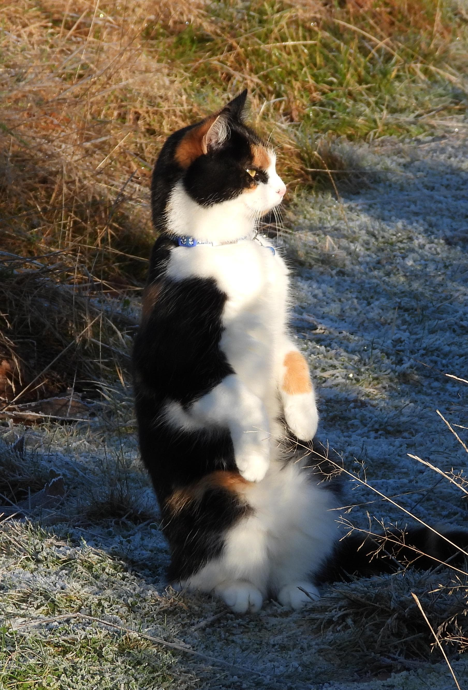 Hej! Małysz!!
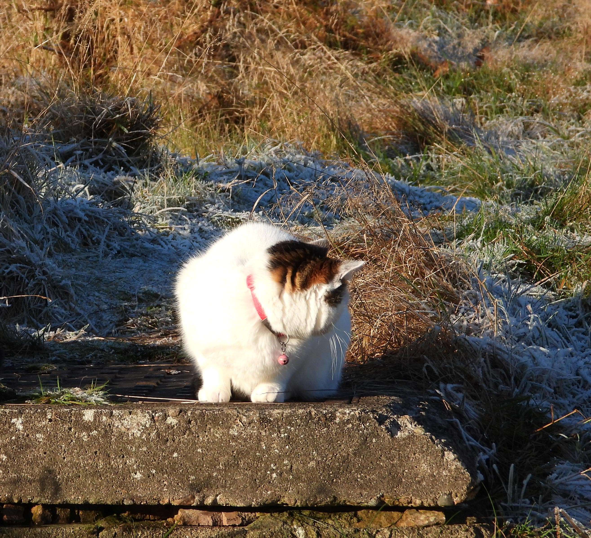 Co?
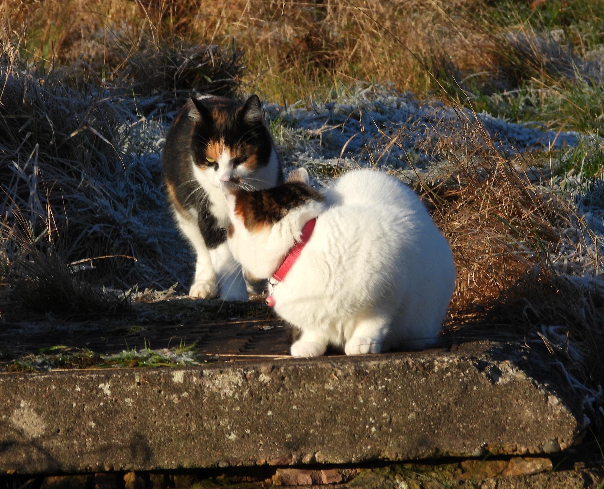 Może byśmy zrobiły specjalny odcinek świąteczny?
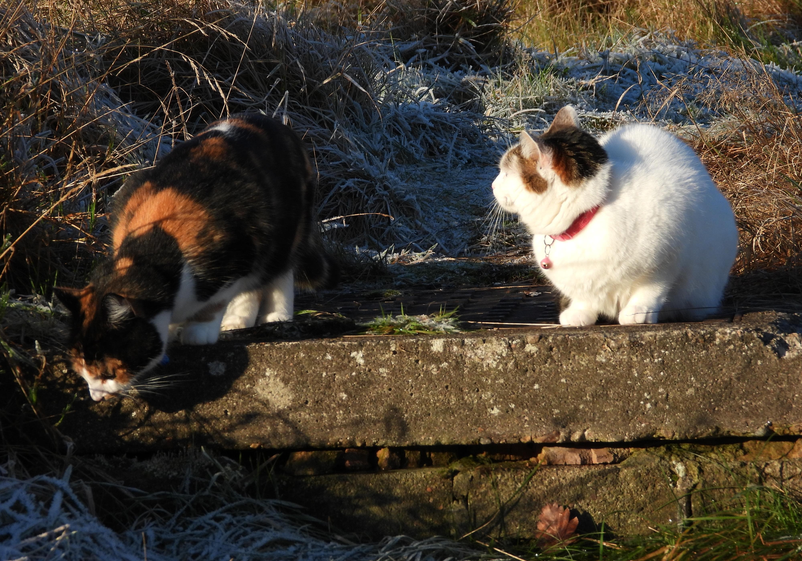 Z Kevin Sam w Domu i Szklaną Pułapką?
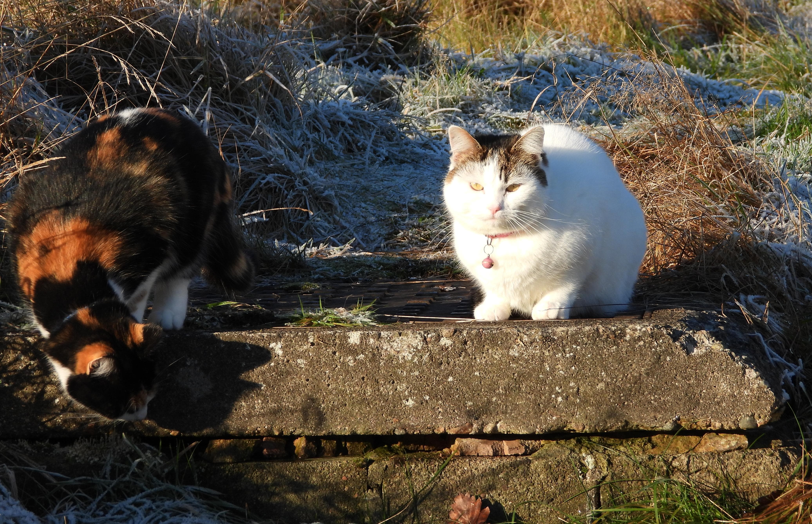 Nie, z wyborem naszych filmików!
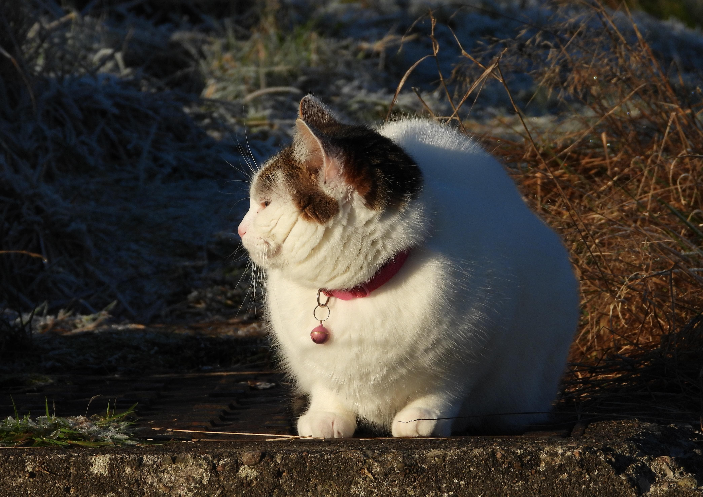 Świetny pomysł! Do roboty!
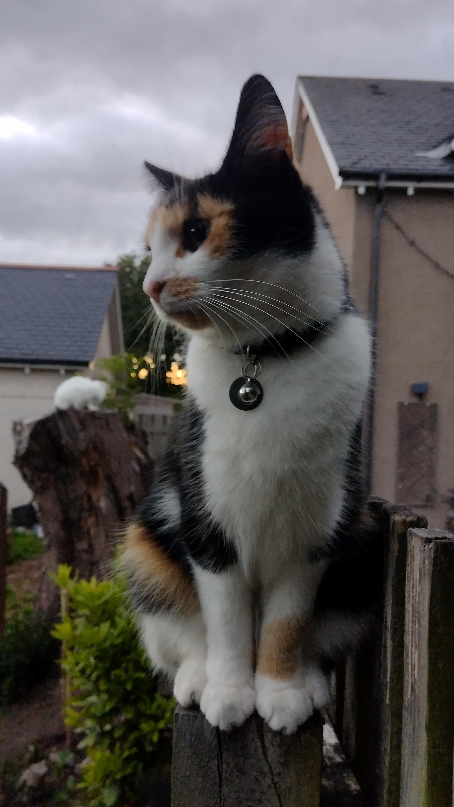 Zaczynamy! Video numer jeden: Małysz i jej akrobacje na drzewie! Z Odcinka 23 Nadia C.
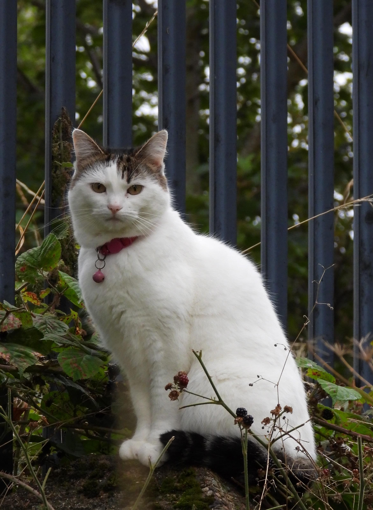 A teraz Mortka skacząca z drutu kolczastego na garaż. Z Odcinka 112 Koty są wieczne
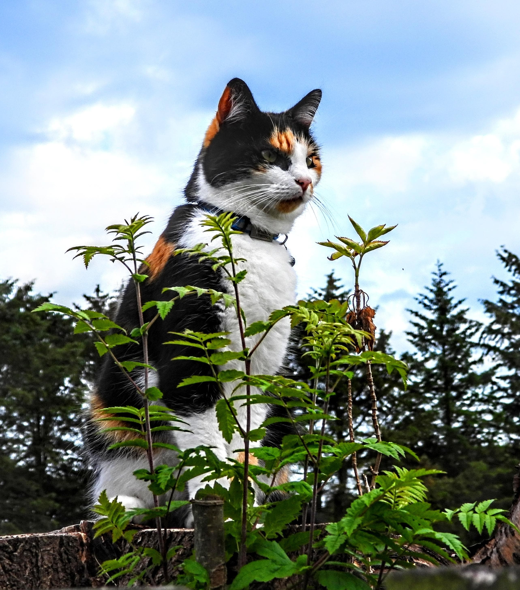 Małysz to śmieszny kot. Na przykład, jak się przestraszy albo ucieszy to podskakuje z pełnym obrotem. Kilka filmików; przedstawiamy po raz pierwszy.
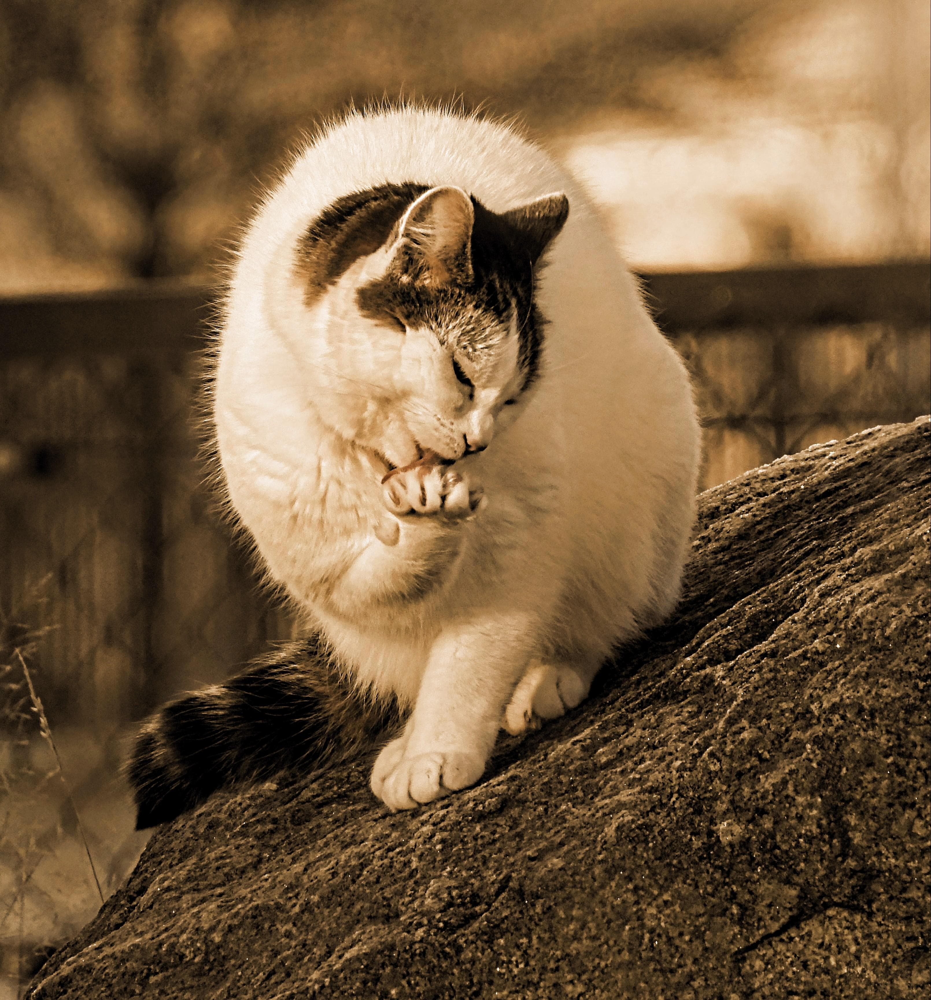 Lepiej być śmieszną niż szaloną. Również po raz pierwszy na ekranie: co się może stać jeśli się pomyli kung-fu, taekwondo i gonitwę za własnym ogonem.
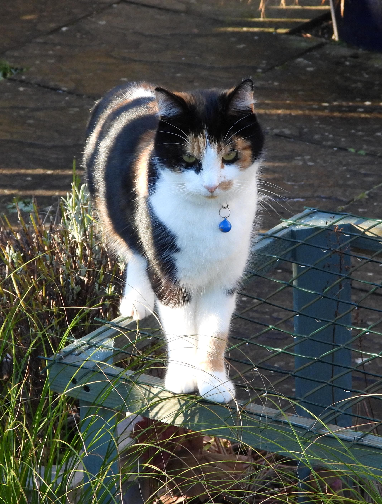 No i sławny powietrzny myśliwy z Odcinka 42.
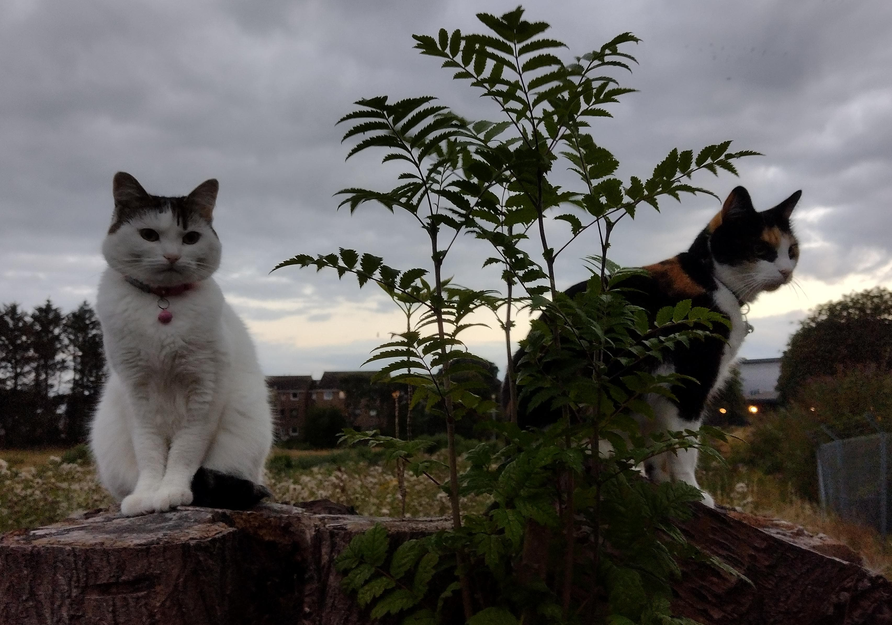 Na zakończenie, nasz wspólny występ z kręcenia pogoni do Odcinka 112 Koty są wieczne.
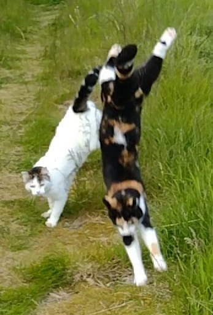 WESOŁYCH ŚWIĄT!!